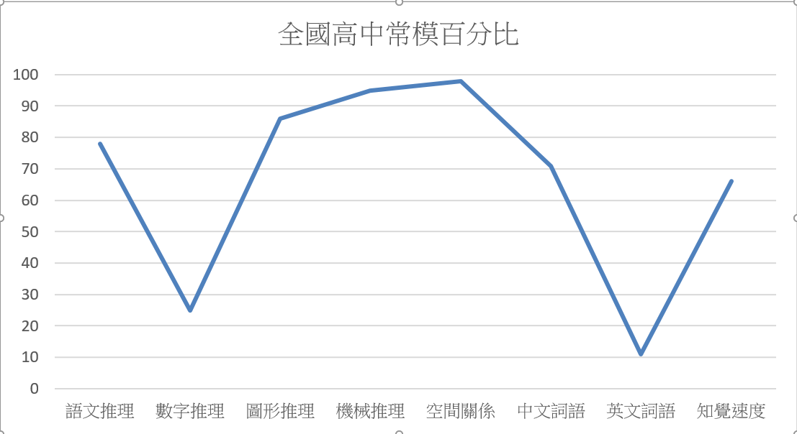
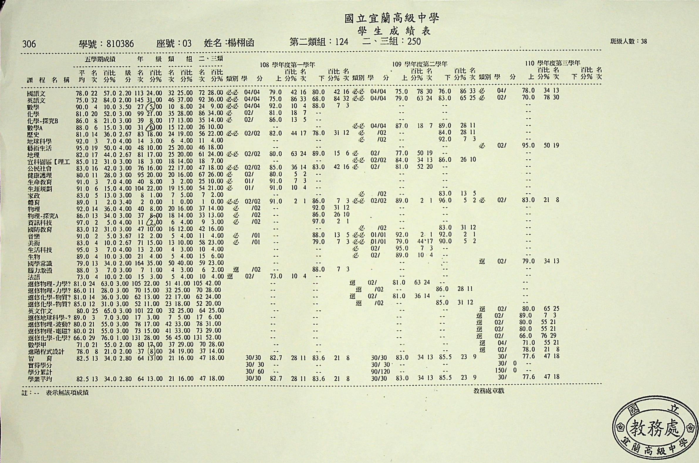
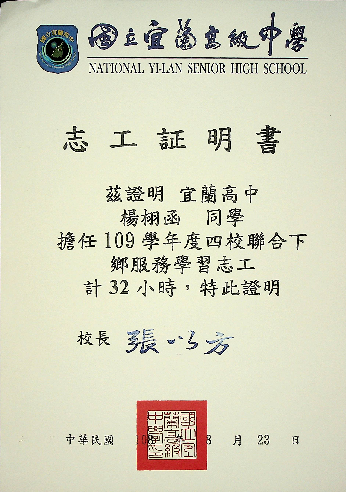
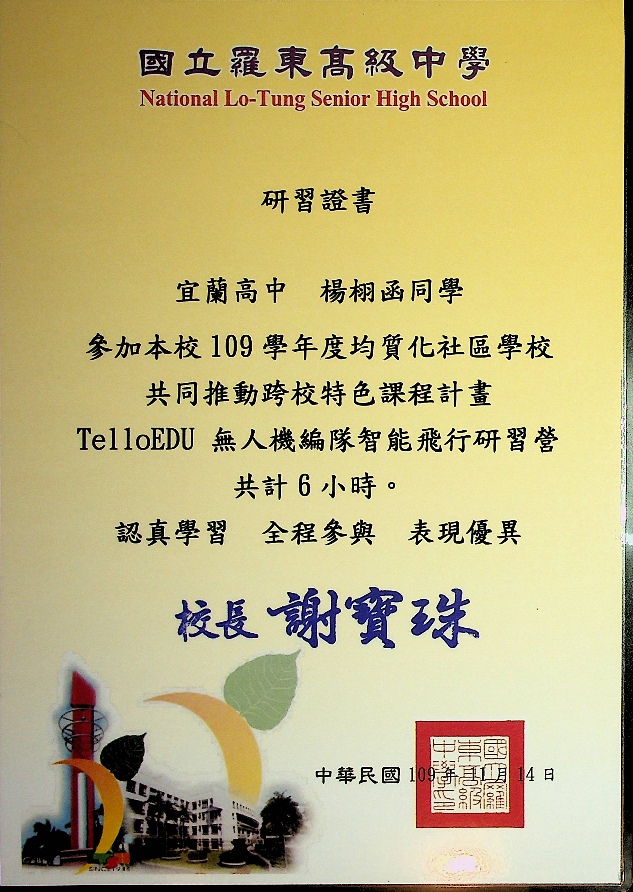
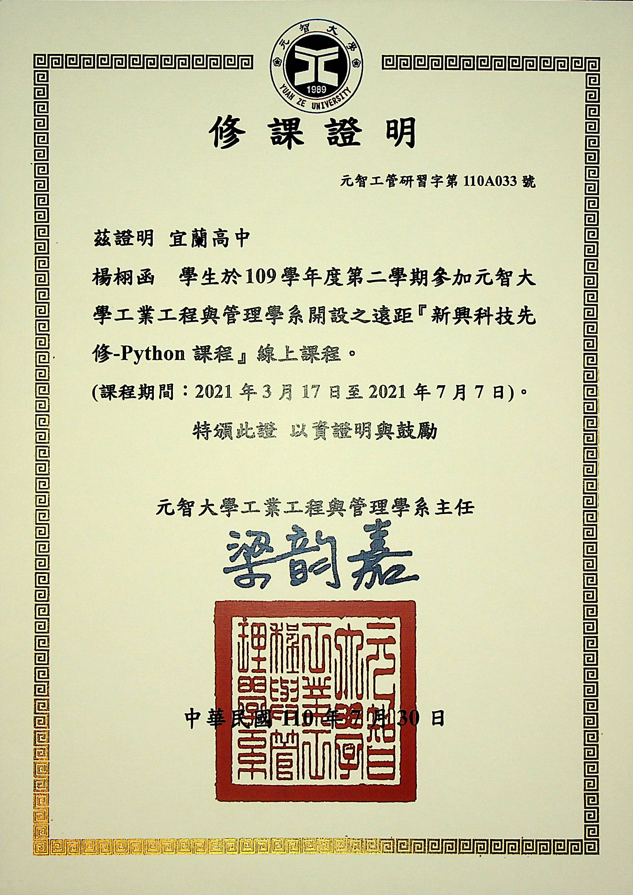
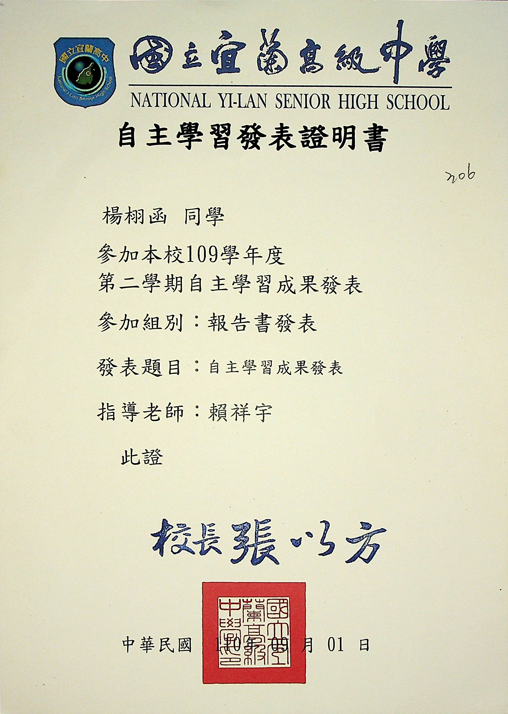

自我介紹
姓名: 楊栩函
性別: 女
興趣: 閱讀小說、當背包客、彈柳琴、魔術方塊
性格: 重內自省、喜歡獨處
專長: 程式設計
個人特點: 邏輯思考、自我學習能力
人生夢想: 環遊世界
社團經驗: 宜蘭青少年國樂團
座右銘: Life is not a bed of roses.
性向測驗
| 語文推理 | 數字推理 | 圖形推理 | 機械推理 | 空間關係 | 中文詞語 | 英文詞語 | 知覺速度 | |
|---|---|---|---|---|---|---|---|---|
| 百分比 | 78 | 25 | 86 | 95 | 98 | 71 | 11 | 66 |
高一的多元性向測驗，換算成全國常模百分比，結果顯示明顯偏向理工的空間及機械邏輯方面， 因此我的優勢在理工中偏向工程部分，而弱勢卻是在英文，也因此高中我還有製作一本小冊子專門記錄我不會的英單， 共有2500個單字，而真正背下的大約2000個。
特質能力歸納
我很擅長立體空間及邏輯方面的思考，也正好對此很有興趣，我很幸運，能力正好是興趣。
立體空間部分也使我培養對魔術方塊的興趣，我能轉二到七階的普通魔方，及五種不同的變形魔方。 邏輯方面則是會在手機上找邏輯相關解謎遊戲，像是進階版踩地雷Slitherlink。
自我分析
成績
資訊科技相關的在校成績百分比
| 資訊科技 | 進階程式設計 | 數學 | 數學A | 生活科技 | |
|---|---|---|---|---|---|
| 百分比 | 2% | 8% | 5% | 6% | 2% |
我就讀宜蘭高中，男女比大概7比1，因此顯示我在資訊科技相關的課程所佔的優勢很大，當時資訊科技課上還有擔任小老師幫助同學查找程式中的漏洞， 且生活科技繳交的專題作業均與程式設計有關，分別是彈珠台及Arduino自走車。
高中段考類組排名
高一還未選則類組，高二選擇二類組。最初進高中時也有想著要認真讀書，但國中和高中的強度差太多了， 因此第一次段考慘不忍睹，第二次段考就發憤圖強，因此提升很多，而後面的起起伏伏大部分是英文及國文。
高二第一次段考隔了一個暑假，而暑假時我也沒有荒廢學業，因此高二的第一次段考我的成績衝得很高，雖然後面因為大家也都提升而降低了一點， 但還是能維持一定的水平，尤其是在高三階段也有安排時間兼顧學測及段考。
.png)
志工經驗
四校聯合下鄉服務
擔任大地遊戲關主及RPG角色扮演，主要對象為國中生， 營隊內容也包含各種高中簡單課程，亦有旁聽其餘學生帶來的課程， 都含有問答、照片等幫助國中生簡單了解高中課程內容。
聖母醫院擔任志工
主要內容為包熱敷包，扶老人走路，更換床單及枕頭巾，原先預計時長為一個月， 但後來因疫情關係暫停，並未得到志工證明，但仍有持續擔任志工。
課外相關課程
羅東高中的無人機編隊智能飛行研究營
內容主要為用Tello Edu無人機及其專用的教育APP進行邏輯及空間相關的訓練， 初步認識無人機及編寫無人機程式，以手機連接無人機，自行編寫無人機的操控， 程式的編寫模式亦有所不同，以營隊形式了解兩種編寫方式。
元智大學的新興科技先修 – Python課程
主要為線上上課，課程內容由Python 的入門學起，在網路上以直播方式和大學教授學習程式， 課後也有課堂作業須完成，並使用Google colab 編寫程式，主要學習內容有字串、運算子及流程控制
學習歷程
高三時參加校內的自主學習發表，當時是疫情在家線上上課時，作品是Arduino自走車，主要做的是自走車的程式控制， 程式內容均為網路上查找資料學習的，因為是自行改造的自走車，後來都不是去自走車相關網站找資料，而是直接查找控制板的控制程式， 而且後續也持續再改裝，除了原本的自訂程式，還多研究的藍芽控制及紅外線控制，
學習歷程反思
新課綱的學習歷程主要是為了紀錄學習軌跡及未來專業探索。
學習軌跡的部分我主要以自然科的實驗報告呈現，分別選擇了高一及高二的分組實驗報告， 高一的報告都寫得磕磕絆絆，尤其是前面的摘要、研究動機及研究目的都要思考一陣子， 高二時就學習到了許多技巧，像是後面的實驗原理、實驗成果及分析與討論，我學到如何吸收及 綜合自己的實驗及網路上知識，尤其是分析與討論，常常會讓我覺得課堂上的知識太少， 無法完整敘述實驗可能產生的誤差等。
專業探索則是網站的架設，包含了hyml及Git， 都是利用高三的寒假上網自主學習探索。書本的內容雖然很多，但常常只是基本框架， 因此我最主要還是在網路上學習，當我遇到問題時再查詢也不會太晚。但 Git 部分我花了很多時間， 因為跟 html 只需要排列組合或多嘗試不一樣，Git 是我以前沒有接觸過的形式，是真正的與電腦溝通， 但也因為如此，我反而更加地想要學會Git，程式對我而言的確是有某種吸引力。
接觸動機
父親從事程式相關工作，且哥哥目前是程式設計系的大二在讀生，因此了解程式設計的知識頗多。 國小寫Scratch時就特別容易上手，當時以為只是邏輯性好，後來國中的資訊課也適應良好， 高中時的程式設計課還能擔任小老師幫助同學查找程式中的漏洞。
就讀動機
我知道現在程式設計是很熱門科系，但我並不是因為這個而選資工的。
首先，程式設計對我來說很容易上手，目前的學校課程及課外的自我學習我都能很好的找到方法學習。
再來，程式方面的未來工作很符合我的性格，喜歡獨處，喜歡文字而非圖像，很習慣密密麻麻的文字。
最後，資訊工程符合我對未來工作及生活狀態的期望。
專業探索
| 資訊科技 | 航空工程 |
|---|---|
| HTML5.CSS3網頁設計手冊 | 基本天文學課程 – 編者 朱永鴻 |
原先高中感興趣的方向為程式設計及航空工程，所以兩個方向均有深入了解，後因程式設計相對較擅長而選擇程式。
資訊科技方面
高一時會上台中女中解題系統學習APCS相關，此次網站架設主要學習html 、 CSS及Git，html包括照片、表格、頁內連結及背景
航空工程方面
有準備校內地球科學科的能力競賽，因此曾在暑假時深入了解天文及大氣相關課程，也有了解相關時事， 例如2021年12月25日發射的詹姆斯·韋伯太空望遠鏡

未來學習計畫
我打算在大學時善用Github ，因為不論是自己上傳或是看別人的程式，我認為都是很好學習程式的方法， 而且利用Github 還能當作我在程式上的歷程或學習的過程，Github能直接展示我個人在程式方面的能力
我也要再精進英文，確實英文是我目前的短版，但我在學測後就有報英文班了， 是屬於口說及英聽類的線上學習，學測後我也馬上去考了多益，成績為545，分別是聽力320和閱讀225， 聽力較好應該是因為曾經有請過家教，但只有加強口說及聽力部分，而閱讀的問題大概是在單字量， 單字從國中時就是我的弱點，高中主要加強學測的單字，轉換到多益時短版就明顯的出現了， 因此大學的英文部分我會加強單字量、聽力及口說。
生涯規劃
短期規劃（大學入學前）我要把高中所學的程式內容複習一次，並先適應目標大學的程式語言，我會在暑期打工，存錢買大學要用的電腦。
中期規劃（大學期間）除了程式設計部分會另外提升英文，也希望能有和程式設計相關的社團或課外活動，我希望能爭取交換學生的名額，因為我對不同的國家及環境非常向往。
長期規劃（大學畢業後）我會就讀研究所，因為未來就業會較簡單，而就業部分我有思考自行創業或在私人企業工作，自行創業可能會希望迎合大眾，做客製化方面的服務提供。